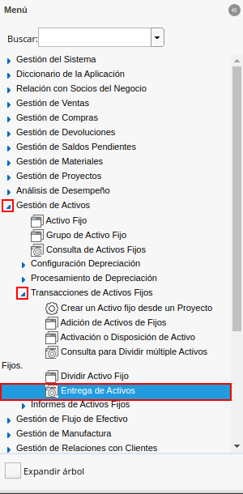
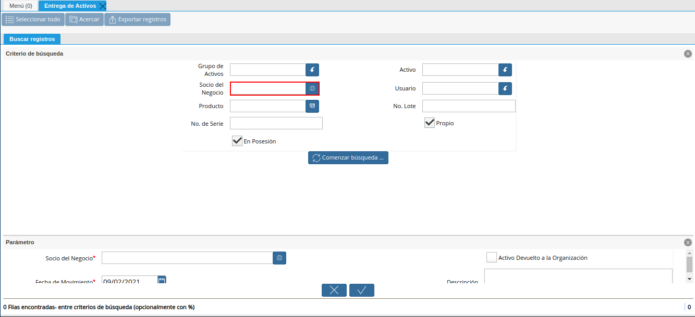
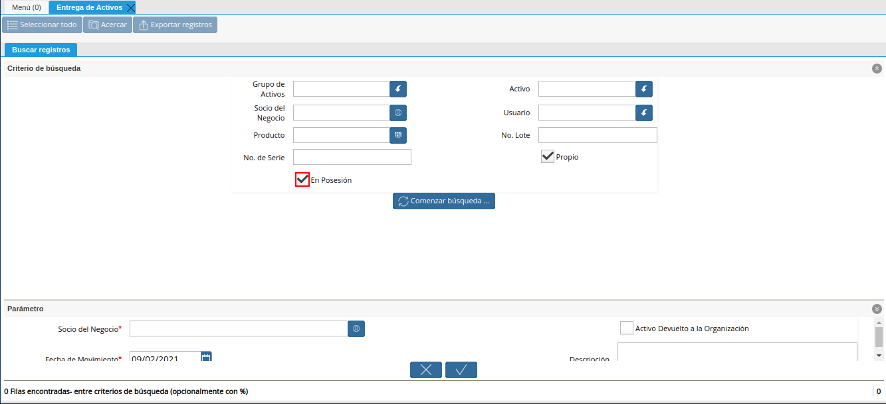
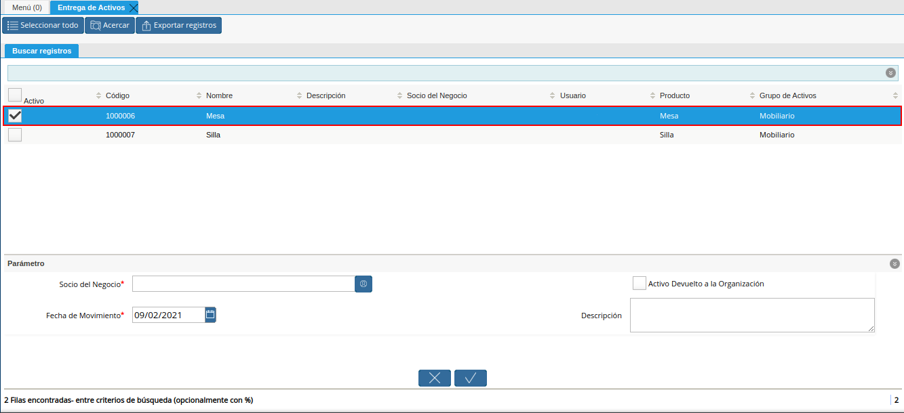

Entrega de Activos¶
Ubique y seleccione en el menú de ADempiere, la carpeta “Gestón de Activos”, luego seleccione la carpeta “Transacciones de Activos Fijos”, por último seleccione la ventana de búsqueda inteligente (Smart Browser) “Entrega de Activos”.

Imagen 1. Menú de ADempiere
Podrá visualizar la ventana de búsqueda inteligente “Entrega de Activos”, con diferentes campos que permiten filtrar la búsqueda en base a lo requerido por el usuario.
Imagen 2. Ventana Entrega de Activos

Seleccione en el campo “Grupo de Activos”, el grupo de activos por el cual requiere filtrar la información.
Imagen 3. Campo Grupo de Activos

Seleccione en el campo “Activo”, el activo por el cual requiere filtrar la información.
Imagen 4. Campo Activo

Seleccione en el campo “Socio del Negocio”, el socio del negocio por el cual requiere filtrar la información.

Imagen 5. Campo Socio del Negocio
Seleccione en el campo “Usuario”, el usuario por el cual requiere filtrar la información.
Imagen 6. Campo Usuario

Seleccione en el campo “Producto”, el producto por el cual requiere filtrar la información.
Imagen 7. Campo Producto

Ingrese en el campo “No. Lote”, el número de lote por el cual requiere filtrar la información.
Imagen 8. Campo No Lote

Ingrese en el campo “No. de Serie”, el número de serie por el cual requiere filtrar la información.
Imagen 9. Campo No. de Serie

El check “Propio”, permite filtrar por los activos de la organización.
Imagen 10. Campo Propio

El check “En Posesión”, permite filtrar por los activos que se encuentran en posesión de la organización.

Imagen 11. Check En Posesión
Seleccione en el campo “Comenzar Búsqueda”, para filtrar la información en base a lo seleccionado en los campos indicados anteriormente.
Imagen 12. Opción Comenzar Búsqueda

Podrá visualizar los resultados de la búsqueda de la siguiente manera.
Imagen 13. Resultados de la Búsqueda

Seleccione el activo a entregar al socio del negocio.

Imagen 14. Selección del Activo
Seleccione en el campo “Socio del Negocio”, el socio del negocio al cual se le esta realizando la entrega del activo.
Imagen 15. Campo Socio del Negocio

Seleccione en el campo “Fecha del Movimiento la fecha en la cual se encuentra realizando la entrega.
Imagen 16. Campo Entrega de Activo

Ingrese en el campo “Descripción”, una breve descripción de la entrega que se encuentra realizando.
Imagen 17. Campo Descripción

Seleccione la opción “OK”, para ejecutar el proceso.
Imagen 18. Opción OK

Devolución de Activos¶
Para devolver el activo a la organización debe realizar el mismo procedimiento explicado en el proceso Entrega de Activos, destildando el check “En Posesión”, para filtrar por los activos que no se encuentran en posesión de la organización.
Imagen 19. Check En Posesión

Adicional a ello, debe tildar el check “Activo Devuelto a la Organización”.
Imagen 20. Check Activo Devuelto a la Organización

Finalmente puede proceder a culminar el proceso.